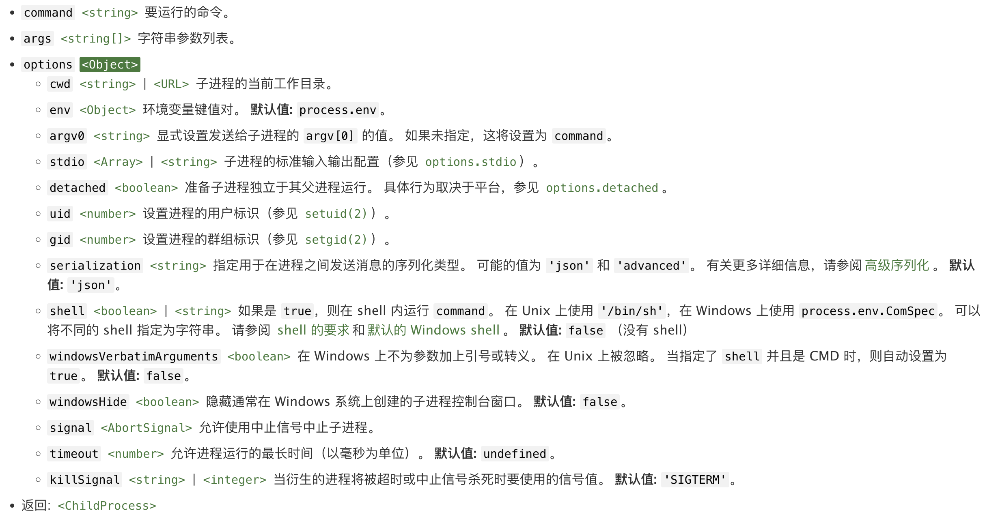
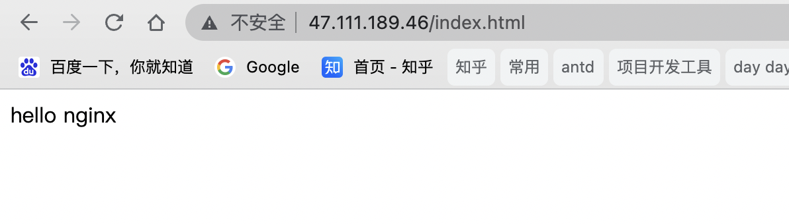
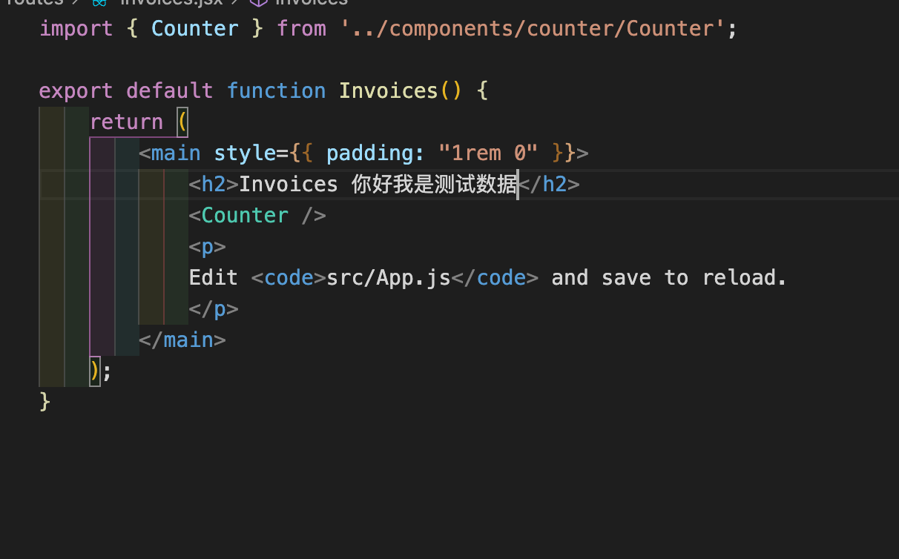
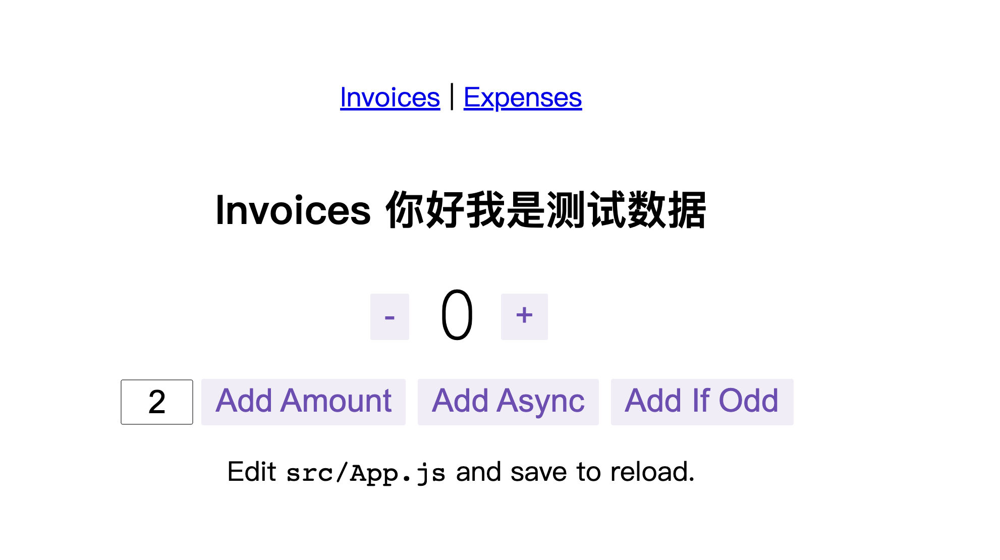

起步 bin目录下创建zh-cli.js
1 2 #!/usr/bin/env node //让系统动态的去查找node来执行你的脚本文件 console .log('hello zh-cli' )
执行node bin/zh-cli.js，即可输出
配置下package.json的bin：
1 2 3 "bin": {
本地npm link , 即可执行zhcli , 等价于node bin/zh-cli.js。
==npm是如何识别并执行对应的文件?==
阮一峰：Npm Scripts 使用指南
commander Nodejs 命令行解决方案。
使用 1 2 const program = require ("commander" );
命令 .command() .command()的第一个参数为命令名称。命令参数可以跟在名称后面，也可以用.argument()单独指定。参数可为必选的（尖括号表示）、可选的（方括号表示）或变长参数（点号表示，如果使用，只能是最后一个参数）。
1 2 3 4 5 6 program'clone <source> [destination]' )'clone a repository into a newly created directory' )(source, destination ) => {console .log('clone command called' );
.parse(params, [params]) 1 2 3 program.parse(process.argv); '-f' , 'filename' ], { from : 'user' });
新增node命令：
1 2 3 4 5 6 7 program'add' )'add a new template' )() =>
终端输入zhcli -h，可以查看新增的命令及注释。
通过commander对用户输入的参数进行解析，只接受一个参数，多余的参数不处理。然后对用户输入的projectName进行处理。
入口文件zh-cli.js:
1 2 3 4 5 6 7 8 9 10 11 12 13 14 15 16 17 18 #!/usr/bin/env node const program = require ("commander" );const minimist = require ("minimist" );const chalk = require ("chalk" );"create <app-name>" )"您正在使用zh-cli脚手架创建工程" )(name ) => {if (minimist(process.argv.slice(3 ))._.length > 1 ) {console .log("\n Info: 只会取第一个参数作为项目名称，其他参数忽略" )
校验输入的projectName validate-npm-package-name 检验字符串是否是一个有效的包命名。
使用 1 2 3 4 5 6 7 8 9 10 11 12 13 14 15 const validateProjectName = require ("validate-npm-package-name" )const result = validateProjectName(name);if (!result.validForNewPackages) {console .error(chalk.red(`非法项目名称: "${name} "` ));(err ) => {console .error(chalk.red.dim("Error: " + err));(warn ) => {console .error(chalk.red.dim("Warning: " + warn));1 );
命令行交互 我们的需求 我们需要提供几套模板给用户选择，比如：
纯前端工程（CSR模式，不带node）
hobber + React前端模板
SSR工程
…
我们需要指定提示并获取用户输入的内容，比如：
项目描述
初始化版本号
是否自动安装依赖
前端默认端口
PC端还是移动端
…
了解了我们的需求，==inquirer==可以满足我们的需求。
Methods inquirer.prompt(questions, answers) -> promise启动提示接口。
questions (Array): Question Object
answers (Object)
Question Object :
使用 1 2 3 4 5 6 7 8 9 10 11 12 13 14 15 var inquirer = require ('inquirer' );(answers ) => {(error ) => {if (error.isTtyError) {else {
执行结果如图所示:
预置模板 & 收集信息 我们先创建一个template的json串：==templatePreset.js==
1 2 3 4 5 6 7 8 9 10 11 12 13 14 15 16 17 18 19 20 21 22 module .exports = [name : "React client template" ,gitDirs : [name : "React CSR 模板" ,git : "https://github.com/houchaowei/react-template-client.git" ,gitSsh : "git@github.com:houchaowei/react-template-client.git" ,name : "React server template" ,gitDirs : [name : "React SSR 模板" ,git : "https://github.com/houchaowei/react-template-server.git" ,gitSsh : "git@github.com:houchaowei/react-template-server.git" ,
当选择了CSR或者SSR之后，提供meta设置，通过==inquirer.prompt==用户输入提前预置的问题，并收集用户输入的所有answer，==meta.js==：
1 2 3 4 5 6 7 8 9 10 11 12 13 14 15 16 17 18 19 20 21 22 23 24 25 26 27 28 29 30 31 32 33 34 35 36 37 38 39 40 41 42 43 44 45 46 47 48 module .exports = () =>const prompts = [name : "version" ,type : "string" ,message : "Initial version of the project" ,default : "0.0.1" ,name : "description" ,type : "string" ,message : "project description" ,default : "description" ,name : "needInstall" ,type : "string" ,message : "auto install dependencies?[Y/N]" ,default : "N" ,name : "isMobileTemplate" ,type : "list" ,message : "组件库是pc端还是移动端？" ,choices : [name : "pc端" ,value : false ,short : false ,name : "移动端" ,value : true ,short : true ,name : "reactFePort" ,type : "string" ,message : "前端默认端口[7001]" ,default : "7001" ,return {
当用户输入完信息之后，需要对用户的输入信息进行收集:
1 2 3 4 const globalPromptsAnswers = await inquirer.prompt(
于此同时，需要去clone已经提前预置好的模板，我们内置了两套模板仓库，分别为CSR和SSR的模板。在==templatePreset.js==里已经内置了仓库地址。
Clone 模板到本地缓存 clone的方式分为https和ssh，这里我们也提供两套clone方式去使用。
https: download-git-repo 1 2 3 download(`direct:${gitDir.git} ` , tmpdir, {clone : true }, function (err ) console .log(err)
注意事项，默认是master分支，非master分支：direct:${gitDir.git}/#${branchName}
child_process.spawn(command[, args][, options])为什么要用到child_process.spawn？
我们当前运行的命令是我们执行的主进程，不可被打断。如果我们要clone提前预置的仓库模板且不影响主进程，通过child_process开启子进程去运行clone命令。创建一个shell，然后在shell里执行命令。执行完成后，将stdout、stderr作为参数传入回调方法。
参数说明：

包装runCommand方法：
1 2 3 4 5 6 7 8 9 10 11 12 13 14 function runCommand (cmd, args, options ) return new Promise ((resolve ) => {const spwan = spawn(cmd, args, {cwd : process.cwd(),stdio : "inherit" ,shell : true ,"exit" , () => {
对clone的过程进行一个内容的输出：
1 2 3 4 5 6 7 exports.gitClone = ({ cwd, gitSSH, tmpName } ) => {console .log(`\n\n# ${chalk.green("tmp路径：" + cwd)} ` );console .log(`# ${chalk.green("正在clone '" + tmpName + "' 模板 ..." )} ` );console .log("# ========================\n" );console .log(JSON .stringify(gitSSH));return runCommand("git" , [`clone ${gitSSH} ` ], { cwd });
执行clone的命令：
1 2 3 4 5 6 7 8 9 10 11 12 13 14 15 16 17 const tmpdir = path.join(path.join(os.tmpdir(), "zhcli-presets-temp" ), presetName);await new Promise ((resolve, reject ) => {cwd : tmpdir,gitSSH : gitDir.gitSsh,tmpName : gitDir.name,() =>console .log(chalk.green('模板仓库克隆成功' ))(err ) => {1 );
==os.tmpdir()==: 远程模板仓库clone成功后，暂存到本机的缓存目录里。
在缓存目录下可以看到模板仓库：
走到这一步已经能拿到的信息有：
1 2 3 4 5 6 7 8 9 10 11 {answers : {name : appName tmpdir : fullname, gitDir : {name : "React CSR 模板" , git : "https://github.com/xx/react-redux-tutorial.git" , gitSsh : "git@github.com:xx/react-redux-tutorial.git" ,
下一步就是生成模板文件，如果只是个人使用的，就直接生成模板文件就可以了，如果是涉及到公司的流水线部署时，这里会涉及到集成CI/CD的一个流程，后面会以阿里云服务器为例进行讲解。
generator file 根据tmpdir的缓存模板目录，通过fs对文件进行递归遍历，拿到每一个目录下的所有的文件。
代码参考：
1 2 3 4 5 6 7 8 9 10 11 12 13 14 15 16 17 18 function getFileList (dir ) let list = [];const arr = fs.readdirSync(dir);try {function (item ) const fullpath = path.join(dir, item);const stats = fs.statSync(fullpath);if (stats.isDirectory()) {else {catch (error) {console .log('获取文件目录error：' , chalk.red(error))return list;
对拿到的fileList通过async.each()进行异步遍历，用fs.readFileSync()拿到每一个文件的内容进行写操作。其中对每个文件的lastIndexOf(“/“)执行fs.mkdif()建立文件夹，绝对路径执行fs.writeFile()写操作。
其中基于当前主进程的路径组合绝对路径：当前路径 + appName + 每一个文件的相对路径。
1 const path = path.join(process.cwd(), appName, relativePath);
关键代码：
1 2 3 4 5 6 7 8 9 10 11 12 13 14 15 16 17 18 19 20 21 22 23 24 25 26 27 28 29 30 31 32 33 34 35 36 37 38 39 40 41 42 43 var writeFileRecursive = (_path, buffer, callback ) => {const lastPath = _path.substring(0 , _path.lastIndexOf("/" ));recursive : true if (err) return callback(err);if (_err) return callback(_err);return callback(null );function writeFiles ({ ) return new Promise ((resolve ) => {async .each(let rp = getRelativePath(fileObj.file, tmpdir);if (rp === "gitignore" ) {`.${rp} ` ;
1 2 3 4 5 6 7 8 9 10 11 12 13 14 15 16 17 18 19 20 21 22 23 24 25 26 27 28 module .exports = ({return new Promise ((resolve, reject ) => {(res ) => {fileObjArray : res.fileObjArray,answers : res.answers,() =>() =>() =>
至此，缓存模板写入当前路径文件已完成。
相关知识点：模板引擎替换https://www.tabnine.com/code/javascript/functions/consolidate/Consolidate/handlebars
gif图实现效果图：
阿里云ecs申请购买服务器，安装nginx服务，配置安全组，开启80端口。
访问线上地址：

在本地启动demo项目
修改其中一行代码：

package.json中配置的script命令：
build命令和deploy.sh发线上部署脚本都已经内置在脚手架中，创建新项目的时候，会一并附带来，将部署脚本集成到脚手架，且脚手架可能只多套脚本。
发版和部署：
刷新线上地址：
